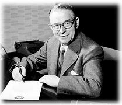

Les LEGO ont été créés en 1932 par Ole Kirk Christiansen. Depuis lors, ils sont devenus une icône du jouet pour enfants et adultes du monde entier.
Les briques LEGO modernes sont apparues en 1958, avec un design permettant une infinité de combinaisons créatives.
